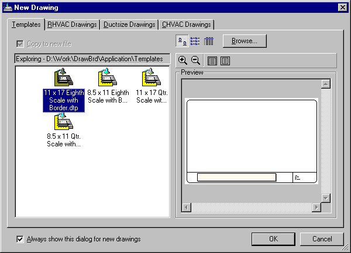

New Drawing |
  
|
New Drawing |
|
Displayed when the Drawing Board menu item is clicked and there is not yet a drawing associated with the current project. Can also be redisplayed by clicking the Change button on the Set Drawing File Link dialog.

Templates, Rhvac Drawings, etc.: Tabs that determine which drawings are available for selection. Drawings shown on the Templates tab are ones in a special Templates folder that are used only for starting new drawings. You can make your own template drawings by clicking the menu "File | Save Copy of Drawing As Template." The other tabs, "Rhvac Drawings," etc., list drawings that are in the Projects folders of those programs.
Copy to new file: When checked, copies the selected drawing to a new file with the same name as the current project file. When unchecked, the selected drawing will be linked with the current project. Note that this checkbox is checked and cannot be unchecked (it is disabled) whenever the current tab is either Templates or the tab for the current program.
Large Icons, List, Details: Determines how the drawing icons to the left will be displayed.
Browse: Opens a Browse for Folder dialog, where you can change the folder for the list of drawings.
Zoom In, Zoom Out: Zooms the preview in or out by a small amount.
Zoom to Page Width: Sets the zoom of the preview to just fit the width of the drawing.
Zoom to Whole Page: Sets the zoom of the preview to include the entire drawing.
Always show this dialog for new drawings: When checked, makes it so this dialog appears whenever you click the Drawing Board button for a project that does not have a drawing associated with it yet. When unchecked, the Drawing Board window is opened with a blank drawing.
OK: Copies or links the selected drawing to the current project and closes this dialog. Double clicking a drawing in the list has the same effect.
Cancel: Closes this dialog without making any changes.